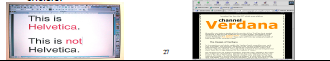
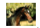
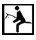
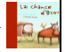
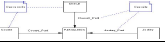

- La phase de conception et ses éléments
- Les parties fonctionnelle et technique
- Principes d’ergonomie et de navigation (arborescence, schéma fonctionnel et storyboard)
- L’arborescence
- Le Schéma Fonctionnel
- Le Schéma Fonctionnel
- Le Storyboard
- Eléments d’ergonomie
- La Charte Graphique
- Les écrans maîtres
- La page d’accueil (home Page)
- La typographie
• C’est sans doute un des éléments primordiaux constituant la charte graphique.
• Celle-ci est constituée de deux jeux de typo dont chaque jeux peut contenir
plusieurs typos.
• L’ensemble de ces jeux ne doit pas (sauf cas particuliers) excéder cinq typos au
total pour ne pas perturber la lisibilité. Deux jeux dont :
-
Une typographie dite “ images ” appelée ainsi à cause de son format n’étant pas une police système, cette police est traduite sous un format image .gif pour des raisons de poids.
Une typographie “ HTML ”
• Cette typo doit être choisie pour un confort de lisibilité optimal.
• Une typo sans plein ni limites (Sérif type : Times, Garamond…) s’avère
être un choix judicieux en raison de son extrême lisibilité.
• Les titres, sous titres, et navigation peuvent être un choix de typographie
différent afin de segmenter/différencier l’information.
: caractères tapés à même la pageHTML et visibles sur tous les postes sans perturbation.
• Ces typos étant intégrées dans le système informatique et
présentes sur tous les ordinateurs.
• Ces caractères sont extrêmement limités en terme de
taille.
• Ils sont couramment au nombre de quatre ou cinq.
• Pour améliorer sensiblement l'accessibilité d'un site web, il
faut permettre le redimensionnement du texte, afin qu'il
s'adapte aux résolutions et aux paramètres des utilisateurs.
• Le texte html devrait être soit de l’Helvetica, soit du
Verdana .
• Cette dernière offrant un maximum de lisibilité pourrait être
choisie.

-L’iconographie:
• Elle est généralement composée de quatre éléments : les photos, les
pictogrammes, les illustrationset les graphiques.
• La photo est la technique qui permet de créer des images par l'action de la
lumière.

• Le pictogramme est un dessin qui traduit une idée par une scène figurée et
symbolique. Le dessin est schématique et destiné à signifier des indications
simples

• L’illustration est une image ou peinture accompagnant un texte.

• Le graphique qui représente (quelqu'un ou quelque chose) par des lignes
ou des figures sur une surface.

• La surabondance de photos s’avère bien souvent un frein à
l’affichage de page en raison de la surcharge de poids
qu’entraînent celles-ci.
• Néanmoins l’emploi de photos permet bien souvent de donner
une âme au site et de le personnaliser.
• Les animations FLASH courantes sur des sites doivent être
dans le respect de la charte client mais on évitera au maximum
le développement de ces animations lors d’Internet car le temps
de chargement doit être maximal.
Les écrans maîtres
• Les écrans maîtres sont constitués de trois ou quatre
pages choisies sur l’ensemble de l’application en
fonction de leurs complexités et de leurs différences.
• Une page d’accueil ainsi que trois pages intérieures
permettent :
• de définir l’ensemble de la charte graphique ainsi
que sa structure
• de poser l’ensemble de la navigation
• et de donner une cohérence et une lisibilité à
l’ensemble
La page d’accueil (home Page)
• Véritable entrée de l’application, elle doit imposer la
communication de l’entreprise et rendre évidente la
véritable fonction de l’application.
• Dans le cas d’un Internet, il est important d’établir une
relation entre l’utilisateur et l’application.
• L’utilisateur est chez lui, il est important qu’il se sente
bien.
• Cette page doit établir une proximité de langage avec
lui.
• Véritable lien entre l’entreprise et l’employé, la home
page est aussi un vecteur d’information à ne pas négliger.
• La home page doit être accueillante et source
d’information.
• Peuvent remonter en home page toutes sources
d’informations nécessaires pouvant créer une
proximité avec l’utilisateur (news, aide, information,
téléchargement de docs utiles, etc. ).
• Ainsi, la page d’accueil peut être un véritable trait
d’union entre la communication interne de l’entreprise
et l’utilisateur.
• Elle permet également d’établir la structure du site
ainsi que d’asseoir la navigation que l’on retrouvera
tout au long du site pour des raisons évidentes
d’ergonomie.